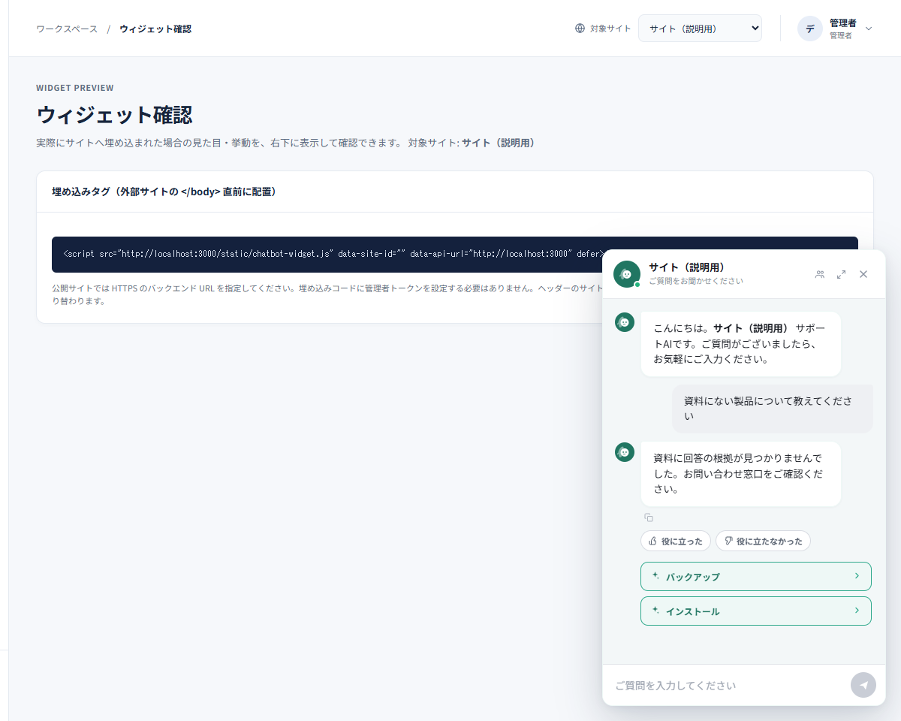

Lấy mã
- Đăng nhập, chọn đúng website rồi mở ウィジェット確認.
- Thử gửi câu hỏi để kiểm tra cấu hình và nội dung.
- Sao chép toàn bộ đoạn mã dưới mục 埋め込みタグ.
Đặt vào trang web
- Mở phần chỉnh sửa HTML hoặc khu vực thêm mã của website đích.
- Dán đoạn mã trước thẻ đóng
</body>. Nếu dùng hệ thống quản lý website, nhờ người phụ trách đặt vào vị trí tải một lần trên trang. - Lưu hoặc phát hành trang rồi mở lại bằng trình duyệt.
- Kiểm tra biểu tượng chat, tên website và một câu hỏi thử.
<script src="https://dia-chi-may-chu/static/chatbot-widget.js"
data-site-id="ma-website"
data-api-url="https://dia-chi-may-chu" defer></script>Kiểm tra sau khi đặt mã
Dùng HTTPS cho website công khai. Không đưa mật khẩu hoặc mã đăng nhập quản trị vào đoạn nhúng. Nếu chat không xuất hiện, xem mục kiểm tra khi cài chat.